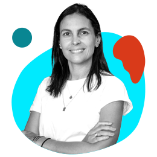
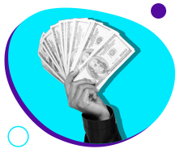
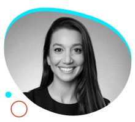
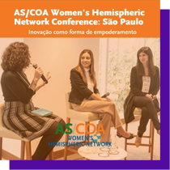
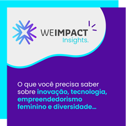

Não queremos ir para o spam! =) selecione este email como
“confiável” ou mova-o para a Caixa de Entrada.
Pilar social como atalho para o ESG
Ao apostar em boas práticas de ESG, uma startup não colhe
apenas os resultados positivos gerados em toda a sociedade e
no planeta, mas também maiores índices de inovação, uma
boa
retenção de talentos, acesso a investimentos...
Para auxiliar líderes que desejam se inserir ou aperfeiçoar
nesta jornada, lançamos um e-book sobre o tema.
No material, adaptamos a metodologia da KPMG para a
realidade do ecossistema, construindo um passo a passo
para
implementar o ESG nas startups.
Fazemos isso utilizando o pilar Social - em especial,
a
equidade de gênero - como ponto de partida. Além disso,
partimos do pressuposto de que uma boa ação impulsiona a
outa: quando uma empresa passa a adotar práticas de ESG, ela
volta seu olhar também para a diversidade & inclusão, e vice
e versa.
Está aproveitando a leitura?
Que tal compartilhar essa edição da WE Impact News com
outras empreendedoras e empreendedores da sua rede de
contatos? 😉
#WIN – WE Impact Network
É possível captar em meio a tantas incertezas?

Silvia
Motta, Managing Director Portfolio and Investmens na
Movile
Altas taxas de inflação e juros, investidores mais
cautelosos e mercado de Venture Capital desacelerando...
será que é melhor adiar a rodada de captação ou ainda
dá
para atrair os recursos que sua startup busca?
Conversamos com Silvia Motta, Managing Director
Portfolio
and Investments na Movile, empresa investidora que
apoiou
grandes startups como iFood e Sympla, entre outras,
na
América Latina.
A executiva conta o que startups devem ter para
conquistar
investimentos no cenário atual, revela 3
tendências para
ficar de olho e ainda divide importantes
aprendizados de
quando esteve do outro lado da mesa, como empreendedora.
#DiversidadenaPrática
Uma Bolsa de valores mais jovem, feminina e democrática

Uma pesquisa da B3 mostrou que as mulheres vêm ocupando seu
espaço na Bolsa de Valores! A média nacional de participação
feminina é de 25% dos investimentos, mas cidades como São
Paulo (30,51%) e Belo Horizonte (30,03%) já ultrapassaram a
marca dos 30%.
O valor das primeiras aplicações, que caíram de R$ 959 para
R$ 125, também indicam que a atividade deixou de ser
exclusiva da classe alta.
Além disso, pessoas com menos de 40 anos representam 53,6% -
a maioria dos investidores e investidoras de São Paulo.
O que você acha da mudança de perfil nesse
ambiente?
#DicadaCEO

“É muito comum uma empresa começar a trabalhar a diversidade
e lembrar dela apenas em março, que é o mês da mulher; em
junho, que é o mês do orgulho LGBTQIA+; e em novembro, que é
o mês da Consciência Negra. E os outros meses? O que é feito
para que essas pautas sejam contínuas? [...]
Pensar em diversidade não é apenas criar vagas
afirmativas,
mas também em como desenvolver a pessoa que está chegando
como analista, para que se torne C-level no futuro.”
Capacitar as meninas de hoje para serem as CEOs de amanhã
Você sabia que apenas 44% das meninas de alta performance se
sentem confiantes sobre suas habilidades?
Mudar essa realidade é o objetivo da Déborah De Mari,
fundadora da Força Meninas, negócio de impacto social para
que meninas de 6 a 18 anos possam desenvolver suas
habilidades e romper com o ciclo que limita o potencial
feminino.
Até o momento, o projeto já impactou mais de 43 mil meninas
em 13 estados e 22 cidades aqui no Brasil.
#NaMídia

Unbox na PEGN
A WE Impact participou da Women’s Hemispheric Network
Conference, que reuniu profissionais da rede para falar
sobre empreendedorismo e carreiras
femininas.
Por lá, levantamos soluções para reduzir desafios impostos a
mulheres nas startups e na hora de captar investimentos.
Você pode conferir o painel, que ficou gravado, no site da
AS/COA, responsável pelo encontro!
#NasRedes

Perdeu esse conteúdo?
Descubra como receber toda semana no seu e-mail
um curadoria com as tendências e novidades do
ecossistema de inovação, tecnologia,
empreendedorismo, feminino e diversidade.